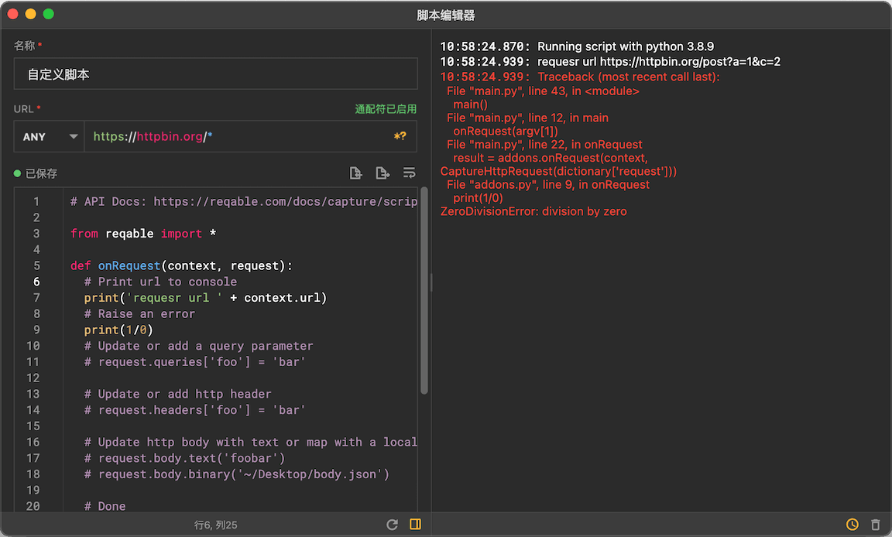
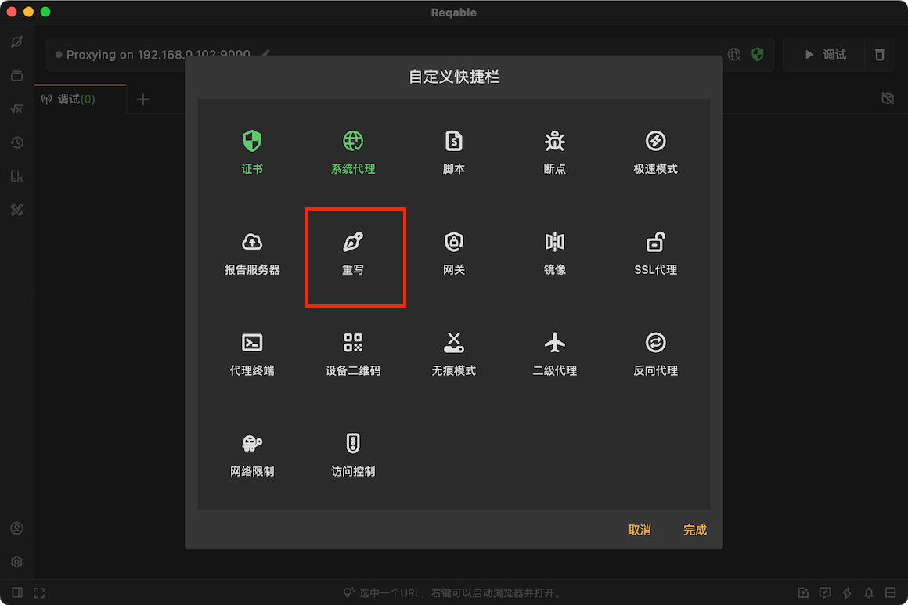

Reqable 里藏得最深的 5 个功能——我翻了半天才发现
以为 Reqable 就是个抓包工具？其实它的 Python 脚本拦截、跨函数共享、cURL 粘贴直导入这些藏得真深，大多数人装了半年都没碰过。
你以为 Reqable 就是个抓 HTTPS 流量的代理工具？它的官网上也是这么定位的。打开界面看看，列表、详情、重发、对比——这些谁都能上手。但我翻了快一周才发现，它藏着好几处冷门到官方文档都没给显眼位置的功能，每一个都是"知道了就离不开"的那种。
Python 脚本里返回 None = 直接拦请求
第一个就让我惊了——Reqable 的脚本不是只能改数据，还能当动态开关。
大家都知道它的脚本用 Python3 写，两个入口函数：onRequest 在请求发出前，onResponse 在响应回来前。文档说返回值是修改后的对象，但没说返回 None 等于中断——整个请求直接被掐掉，客户端收不到任何响应。
藏在哪里？就在脚本 API 的入门说明里，一行带过："让 onRequest 返回 None，该请求即被拦截不再发出。" 没有加粗，没有示例。
什么场景真有用？比如你在调一个接口，某个条件触发时不想让它打出去——测试环境的计费接口、上传图片的接口、或者单纯就是想过滤掉一堆无关的心跳请求。写个两行脚本：
def onRequest(context, request):
if request.url.startswith('https://api.example.com/heartbeat'):
return None
return request比写重写规则还干脆。什么人可以无视？只做调试不做过滤的同学，这个功能暂时用不上。

onRequest 和 onResponse 跑在两个进程里——别踩这个坑
脚本的第二个隐藏点不是功能，是官方藏起来的坑。
你以为 onRequest 和 onResponse 是同一个脚本文件里的两个函数，能共享外部变量？我一开始也这么想，在 onRequest 里写了个全局变量存 token，到 onResponse 里读——结果永远是初始值。
查了半天才发现：这两个函数分别运行在不同的进程中。后来翻reqable文档才找到，官方用一句话提了，但没说为什么要这样设计、怎么绕过。
绕过的方法倒是藏得有道理——用 context.shared 这个字典来传数据：
def onRequest(context, request):
context.shared = 'foobar'
return request
def onResponse(context, response):
print(context.shared) # 输出 foobar
return response这个坑踩过一次就忘不了，但没踩过的人写脚本大概率会懵。提醒一下：shared 只在同一次请求-响应链路里有效，下一条请求会是空的。
cURL 命令直接粘贴进 URL 输入框——自动识别
这个藏得太巧了。装好 Reqable 之后（没装的话从下载拿一份），大家都知道它能从调试列表一键复制 cURL，也能通过菜单导入 cURL 命令。但直接把 cURL 命令糊进 API 编辑页的 URL 输入框——它会自动识别并拆解——这个快捷入口，我翻了菜单才在"更多操作"里看到导入，没发现粘贴直导。
什么场景省事？同事在聊天里甩你一条 cURL，或者从日志里复制一段，你不用点任何按钮，直接 Ctrl+V 进 URL 框，请求方法、头部、请求体、cookie 自动填好，改参数就行。
连带注释的 cURL 都能识别——近期版本还增强了容错，支持 // 和 # 注释，自动忽略 -o 输出参数。这个小细节官方写在 cURL 转换页面的末尾，不注意就滑过去了。

重写规则有个快速栏——从当前请求一键建规则
说到重写，大家都知道右键列表项能快速创建重写规则。但工具栏上有个重写快速栏，能直接抓当前选中请求的域名、路径、头部字段当模板——省得你从规则管理页重新写匹配条件。
入口藏在顶部工具栏的一个小图标，鼠标悬停才显示名称。点一下，选中请求的 URL 路径自动填进规则的匹配模式，改改字段值就能生效。对比从规则管理页新建要快好几个步骤。
提醒一个坑：规则从上往下匹配，顺序在规则列表里调整。如果新写的规则在老规则下面，可能被先命中的旧规则吃掉。官方文档提了但没强调，调试的时候发现"为什么我写的规则没生效"，先去检查规则顺序。
多标签 + 新窗口：调试列表和 API 测试并排干
最后一个不是功能，是工作流技巧——但大多数人抓完包就看一眼关了，根本没发现 Reqable 能开多窗口。
同一条请求的详情面板按 Control + N 开新窗口，这样你可以一边盯着调试列表的实时流量，一边在新窗口里看某条请求的完整响应体，不用反复切标签。API 测试面板也能和抓包列表并排——在侧边栏切 API 测试分组，写请求的同时流量列表在旁边实时滚动，发完请求马上就能看到流量进来。
这个设计在界面上完全没有引导——新用户根本不知道能这么用。但用了之后就回不去了，尤其是调接口的时候，请求发出去、流量抓到、详情看到——三个动作在同一屏完成。
一个容易踩的小提醒
说个副作用：如果同时开了重写规则、断点和脚本，三者会按什么顺序执行？官方没明说，但实测下来——重写规则先跑，然后是断点，最后是脚本。别同时叠太多层，调试起来会很痛。规则的 URL 匹配模式尽量写窄一点，误伤无关流量是 Reqable 用户最常见的问题。
把 Reqable 用透的感觉就是：你以为它只是个抓包的，但其实它能写脚本能当代理能做 API 测试能对比流量能导入 cURL——每翻一次就发现一个新角落。上面这五个，是我花了一周才摸清楚的。相关的功能说明和示例，在GitHub、Gitee、GitCode三个仓库都有备份，哪个方便看哪个。